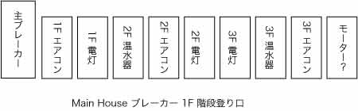

公共料金などの支払いは以下のようになっています。
電気と水道はForeign Trade Bankで振り込みます。他の銀行でも可能かもしれませんが試したことがありません。支払いが遅れたばあいには、それぞれの会社にてお支払いください。
ガスはプロパンガスです。ボンベが空になった時には電話番号？に注文してください。対応はクメール語のみです。
飲料水は20リットルのタンク入りを購入できます。電話番号011-796-182に注文すると配達されます。対応はクメール語のみです。
ケーブルテレビのPPCTV（023-880-028）とインターネットのMfone（023-303-333）は集金に来ます。
ご自分で保守維持をされる場合の情報です。
プノンペンで電気や水道の修理を生業にしている人たちの知識と技術は日本の日曜大工レベルです。修理には必ず立ち会い、作業が終わったあとは必ず作業結果を調べてください。
ただし、普通の日本人なら思い付かないようなユニークな修理技術を持った人もいますので、よく相談することをお勧めします。
ハシゴは長いものと短いものを二つ用意してます。また、剪定ばさみなど簡単な工具は用意しています。電気ドリルなどは近所の店、あるいはツールトンポン市場近くの店で借りられます。
家全体のブレーカは門の外にあります。プノンペンでは頻繁に停電しますが、家が単独で停電した場合にはご自分でブレーカをONにしてください。
プノンペンではブレーカよりも上流は電力会社が管理していますが、ブレーカ以降は自分の責任で配線できます。また、ブレーカは安全に工事をするために、両方の線を遮断するものにしています。
柱に上下に二つの灰色のプラスチック箱があり、上の箱に六つある窓の左下に当家を含む各家のブレーカが入っています。
当家のメインブレーカは左端の幅が広いレバー スイッチです。他のレバー スイッチは他の家のブレーカです。
敷地内の配線は左図を参照してください。左がメインの電気配線で、右が呼び鈴の配線です。それぞれの図はクリックすると拡大した図を表示します。
母屋の離れのそれぞれにブレーカと電力計があります。離れと母屋の電力を別々に計ることができます。母屋のブレーカは一階の東壁階段登り口にあり、図のように配線されています。

離れのブレーカと電力計は寝室の入り口にあります。ブレーカは二つあります。
街灯ができるなどしたために、一部配線していない電灯スイッチがあります。
照明電球は安いものがありますが、数日から数ヶ月で切れますのでお勧めしません。天井の照明にはPHILIPSの5Wかそれに準じるものをお勧めします。予備として古い電球がありますので、適時ご利用ください。
コンピュータ用にUPS（無停電電源）と電圧安定器を用意しています。ご利用ください。ただし、アースを完全にとっていませんので接続した機器（特に金属ケースの機器）によっては軽い感電を感じます。
水道管の止水栓はメインが一カ所、母屋と台所にそれぞれ一カ所あります。クリックすると拡大した図を表示します。
母屋は一旦屋上のタンクに入りそこから各部屋に配水されています。何らかの理由で水タンクが空になった場合には、パイプに入った空気を抜くために各階の全ての蛇口を開けてください。空気の入り方によって全ての階で水が出るまでに数分から数十分かかります。
各トイレには止水栓があり、各トイレの水を全て止められます。
樹は雨期には2ヶ月から3ヶ月、乾期には3ヶ月から4ヶ月に一度の剪定が必要です。とくに玄関の樹と母屋にまとわりついている樹は良く伸びます。
壁のペンキ塗り替えをご希望の場合にはご連絡ください。この家のペンキの色調合を知っているお店をご紹介します。
{kind=link}
{kind=link}
{kind=link}